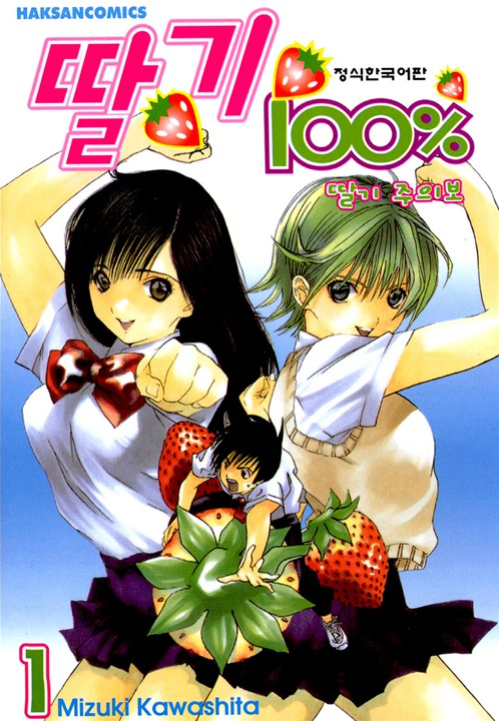
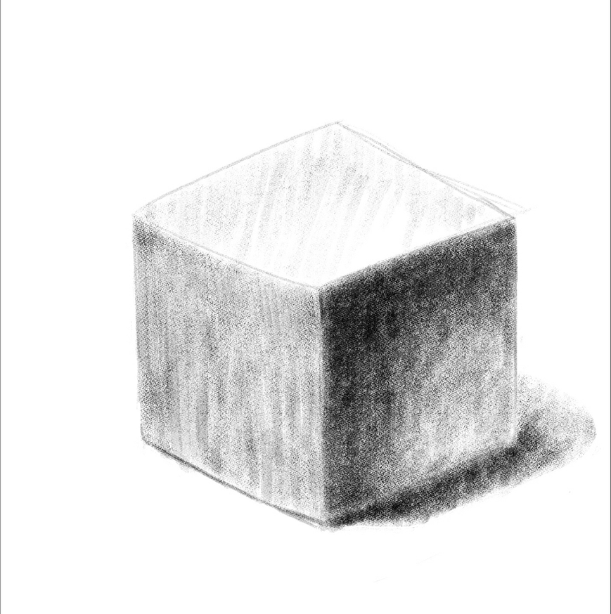

입시도 끝났고 군복무 기간도 남아서 오랫동안 생각만 하고 있던 만화(웹툰)를 배우기로 마음 먹었습니다.
친구가 없기때문에 쓸쓸하게 운전해서 혼자서 가장 가까운 곳( 30분걸림)에 갔습니다. 가서 우선 상담을 해주시더라구요. 진성 아싸히키였던 전 이때부터 슬슬 심장이 떨리기 시작했습니다.
선생님: 만화 좋아하시나요?
나: 네.
선생님: 만화 그려보셨어요?
나: 아뇨ㅎㅎ (대답 듣고 당황하심)
선생님: 아... 그럼 어릴때 그려보신거에요?
나: 아뇨ㅎㅎ (이때부터 선생님 표정이 당황해서 어두워지심)
선생님: 아~ 그럼 만화 관련해서 보시기만 하신거에요?
나: 만화동아리 가입했었습니다.
전에 있던 대학교에 만화사랑이라는 동아리가 있어서 가입했습니다. 만화동아리에서도 아싸였음.
선생님: 와~ 그럼 거기서는 뭐하셨어요?(좀 기대하시는 느낌이었음)
나: 만화... 보기만 했습니다.
선생님:아... 그러셨구나.....
나: ㅎㅎ....(죄송해서 도망치고 싶었습니다.)
선생님: 그럼 어떤 만화 좋아하세요?
여기서 솔직히 '아 딸기 100퍼센트라고 남자 한 명 나오고 여주 3명 나오는 하렘물 제일 좋아해요ㅎㅎ 사촌형이 추천해줬어요.' 이러면 선생님 표정이 더 어두워질 것 같아서 그냥 무난하게 원피스라고 답했습니다.
(참고: 딸기 100퍼센트 입니다. 고전틀딱 만화인데 사촌형이 보라고 해서 봤는데 재밌어요)
이후 강의실 들어가서 바로 와콤 태블릿으로 수업을 시작했습니다.
선생님: 레벨 테스트 겸 인물 전신 한 번 그려보세요.
나: 네. 근데 선생님 그림 좀 그리려면 어느 정도 배워야해요?
선생님:음... 1년은 배워야 조금은 그릴 수 있죠?
선생님 답변 듣고 '난 6개월에 끝낸다' 마음 먹고 전신을 그리기 시작했습니다. 근데 진짜 보는거랑 그리는건 천지 차이였습니다. 무슨 팔 다리는 문어같이 그려지고 얼굴도 엄청 그리기 힘들고 손도 그리기 힘들고 옷도 그리기 힘들고 애초에 자료없이 머릿속으로 그려야하니까 머리 하얗게 되고 아무것도 안 그려지더라구요. 진짜 1시간 반을 낑낑거리는데 그림 그리면서 든 생각이
'집에 가고싶다.' '도망가고 싶다.' '선생님 제 뒤에 오셔서 그림 보지마시고 제발 딴 학생 그림 봐주세요. 제가 죄송합니다.' '방구석님이랑 만화 그리는 분들이 잘 그리시는거였구나.' '트게더에 글 써야지 히힣(트수특:이 와중에 트게더 생각함)'
였습니다. 진짜 너무 어려워요. 창피하고 죄송해서 여기서 미친 척하고 집으로 튈까 생각했습니다.
여차저차 그렇게 레벨 테스트하고 정육면체 소묘부터 시작하는데 다른 학생들은 슥슥 잘하는데 전 형태잡는것부터 낑낑 거리면서 했습니다. 1시간 정도를 낑낑대고 다 끝내지도 못 했어요.
이거 그렸습니다. 중학생때 이후로 뭘 그려본 적이 없어서 되게 못 그리더라구요. 하하하하
이렇게 수업끝나고 선생님들께 죄송하다고 하고 다음주에 뵙겠습니다 말씀드렸습니다. 선생님들이 처음엔 다 그렇다고 위로해주셨습니다.
그 후 저는 자괴감을 느끼면서 집에 왔습니다. 그리고 울면서 트게더에 글 쓰는 중 ㅎㅎㅎㅎ 취미로 하려고 배우는건데 그래도 앞으로 열심히 해야할듯 해요. 이 방에 계시는 그림 잘 그리시는 분들 부럽습니다. GlitchCat
끝.
후원댓글 12개
댓글 12개 ▼